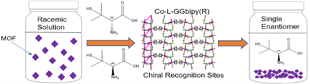
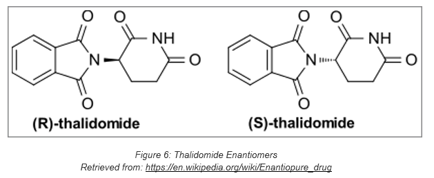
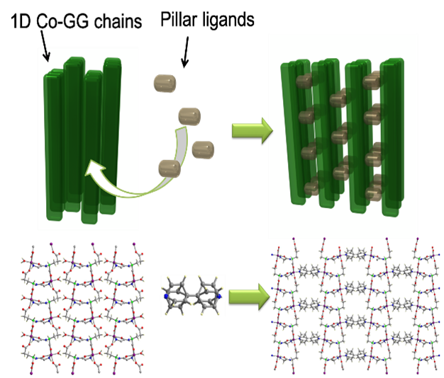

Reticular Synthesis of Homochiral Metal-Peptide Frameworks for Enhanced Enantioselective Separation of Chiral Drugs
Spring 2021-Current
Read a little more about it here in my Goldwater Scholar Essay or
check out my review/proposal paper submitted for CH615: "Special Topics in Inorganic Chemistry"
Journal publication and Honors College Thesis currently under the making... Stay tuned for more!

In the MaD lab, my first research interest revolves around using metal-organic frameworks for drug separation on the basis
of enantioselectivity. The majority of organic compounds, including drugs, exist in nature as what are known as
enantiomers. Enantiomers are compounds that have the same structural formula, but have different 3D configurations in
space. They are non-superimposable mirror images due to having chirality among at least one of its carbon
centers. Enantiomers are separated by R and S configurations, and while they bear the same formula, it is because of
the way it is configured that can give different properties and have different effects. For example the human nose has
thousands of olfactory receptors that binds to organic compounds to smell. Each receptor corresponds to different
smells, and the oganic compound, limonene, exists in R and S configuration. In the nose, their are receptors that only
bind to R or S, and so (R)-limonene smells like oranges and (S)-limonene smells like lemons. The same thing happens in
biological systems in that different configurations operate under different metabolic pathways and thus have differing
effect. Most chiral drugs today are produced in a racemic mixture, or 1:1 ratio of the R and S molecule. Enantiopure drugs have the benefit of presenting only one enantiomer. In some cases, one enantiomer is toxic to
the human body and so it is important to develop separation methods before or after the production of racemic drugs.In the 1960s,
Thalidomide was a drug used to treat morning sickness for pregnant woman. It was later discovered that (R)-thalidomde
is used for morning sickness but (S)-thalidomide caused birth defects.

Enantioseparation of racemics is a quintissential study in pharmoceuticals and is the basis of my research. I am the
sole researcher for use of chiral metal-organic frameworks for enantioselective drug separations. Chiral drug separations have been done before using MOFs that exhibit chirality, however, the use of ligands extensions,
or reticular synthesis for chiral drug separations has not.In my project, I aim to use pillar ligands to tune the pore size of homochiral peptide-based MOFs.
Peptides are chains of amino acids, and when coordinated to certain metals, can create 1D ladder-like structures. By
using longer ligands of differing lengths and functionalities, the distance or pore aperature between these ladders will
increase, allowing for separation of larger racemic molecules which can be evaluated for enantiomeric excess. I identified a metal-peptide framework to induce homochirality
into my MOF and then selected a branch of bipyridyl ligands to further separate the pores. Through systematic synthesis,
I created five novel MOFs through homochiral reticular synthesis with different ligands and pore sizes. I characterized all
of my MOFs and from preliminary results, developed an experiment to utilize these MOFs to separate racemic Penicillamine and
Ibuprofen.
